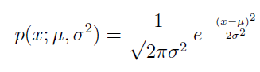

Anomaly detection is the problem of identifying data points that don't conform to expected (normal) behaviour. Unexpected data points are also known as outliers and exceptions etc. Anomaly detection has crucial significance in the wide variety of domains as it provides critical and actionable information. For example, an anomaly in MRI image scan could be an indication of the malignant tumor or anomalous reading from production plant sensor may indicate faulty component.
Simply, anomaly detection is the task of defining a boundary around normal data points so that they can be distinguishable from outliers. But several different factors make this notion of defining normality very challenging. E.g. normal behaviour usually evolve in certain domains and the notion that is considered normal in the present could be changed in future. Moreover, defining the normal region which separates outliers from normal data points is not straightforward in itself.
In this tutorial, we will implement anomaly detection algorithm (in Python) to detect outliers in computer servers. To keep things simple we will use two features 1) throughput in mb/s and 2) latency in ms of response for each server. Gaussian model will be used to learn an underlying pattern of the dataset with the hope that our features follow the gaussian distribution. After that, we will find data points with very low probabilities and hence can be considered outliers.
For training set, we will first learn the gaussian distribution of each feature for which mean and variance of features are required. Numpy, provides the method to calculate both mean and variance (covariance matrix) efficiently. Similarly, Scipy library provide method to estimate gaussian distribution, which is given by:

The complete code (Python notebook) and dataset is available at the following link: Code and Dataset. Five different methods are defined to perform functions defined above i.e. from reading dataset to calculating the mean and estimating gaussian etc. One method that needs explanation is selectThresholdByCV, it is used to find the optimal value for threshold (epsilon) that can be used to differentiate between normal and anomalous data points. For learning the optimal value of epsilon we will try different values in a range of learned probabilities on a cross validation set. F-score will be calculated by for predicted anomalies based on the ground truth data available. The epsilon value with highest f-score will be selected as threshold i.e. the probabilities that lie below this threshold will be considered anomalous.
Chandola, Varun, Arindam Banerjee, and Vipin Kumar. "Anomaly detection: A survey." ACM computing surveys (CSUR) 41.3 (2009): 15.